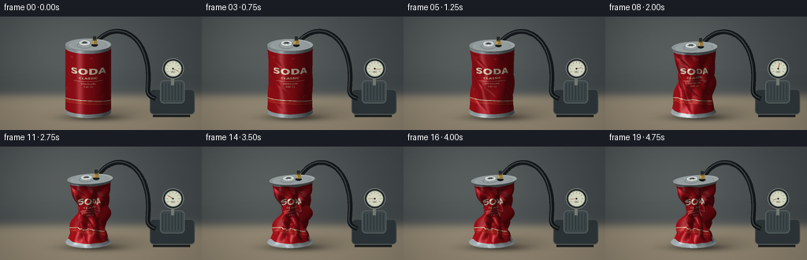
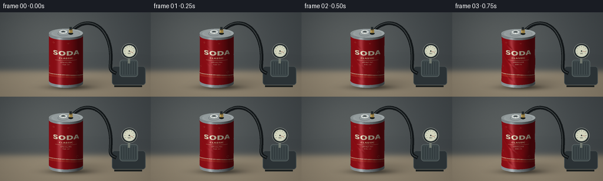

CODING AGENTS AS PIXEL WORLD MODELS
traex/GPT-6.1-Sol · mechanics_0022
点击播放 · 原生 RGB 像素
逐轮保存的候选
回放视频、检查图与代码变化。
每份候选均可单独播放。实际图片检查记录在下方工具轨迹中。
候选 01播放与检查图
点击播放 · 原生 RGB 像素


展开代码变化
--- 上一保存版本
+++ 本次保存版本
@@ -0,0 +1,247 @@
+from pathlib import Path
+import numpy as np
+from PIL import Image, ImageDraw, ImageFont, ImageFilter
+from artifact_io import save
+
+ROOT = Path(__file__).resolve().parent
+W,H,S=256,144,3
+WW,HH=W*S,H*S
+rng=np.random.default_rng(32)
+EL=.27
+CE,SE=np.cos(EL),np.sin(EL)
+CX,BY,SCALE=112,124,29
+view=np.array([0,-CE,SE])
+light=np.array([-0.65,-0.65,1.0]); light/=np.linalg.norm(light)
+halfvec=(view+light);halfvec/=np.linalg.norm(halfvec)
+
+def font(n,bold=False):
+ return ImageFont.truetype('/usr/share/fonts/truetype/dejavu/DejaVuSans'+('-Bold' if bold else '')+'.ttf',n)
+
+# Printed lacquer artwork, mapped onto the metal, not composited over it.
+TW,TH=1024,768
+tex=Image.new('RGB',(TW,TH),(172,16,25)); d=ImageDraw.Draw(tex)
+# Curving cream/red label ribbons wrap around the shell.
+for k in range(3):
+ poly=[]
+ for xx in range(TW+1):
+ yy=610+45*np.sin(xx/TW*2*np.pi+0.3)+k*18
+ poly.append((xx,yy))
+ poly+= [(x,y+7) for x,y in reversed(poly)]
+ d.polygon(poly,fill=(245,226,187) if k==0 else (212,65,48))
+# Center the logo on the visible front meridian (theta = -pi/2).
+logo=Image.new('RGBA',(460,420),(0,0,0,0));ld=ImageDraw.Draw(logo)
+ld.text((230,115),'SODA',font=font(89,True),anchor='mm',fill=(255,246,213,255),stroke_width=1)
+ld.text((230,191),'CLASSIC',font=font(30,True),anchor='mm',fill=(255,219,176,255))
+ld.line((117,225,342,225),fill=(255,222,177),width=3)
+ld.text((230,254),'SPARKLING',font=font(20),anchor='mm',fill=(255,229,195,255))
+ld.text((230,287),'330 ml',font=font(20),anchor='mm',fill=(255,229,195,255))
+tex.paste(logo,(538,125),logo)
+# Small bubbles and genuine fine printed detail.
+for x,y,r in [(635,90,10),(790,87,7),(898,280,8),(567,476,11),(885,543,15)]:
+ d.ellipse((x-r,y-r,x+r,y+r),outline=(226,130,107),width=2)
+d.text((220,290),'CARBONATED BEVERAGE',font=font(17),fill=(236,184,150))
+for j in range(32):
+ xx=275+j*3
+ d.rectangle((xx,480,xx+(1 if j%3 else 2),556),fill=(235,211,184))
+texture=np.asarray(tex).astype(float)
+
+Y,X=np.mgrid[:HH,:WW]; x=X/S;y=Y/S
+# Soft-focus studio/workshop with a restrained, warm tabletop.
+bg=np.zeros((HH,WW,3),float)
+wall=np.array([64.,70.,73.]); table=np.array([137.,126.,107.])
+transition=1/(1+np.exp(-(y-100)/3))
+bg[:]=wall+(table-wall)*transition[...,None]
+glow=np.exp(-((x-81)/112)**2-((y-45)/78)**2)
+bg+=glow[...,None]*np.array([25,24,21])
+# subtle wood grain and film texture
+noise=rng.normal(0,.6,(HH,WW));grain=(np.sin(y*3.1+np.sin(x/29))+np.sin(y*7.2+x*.018))*.45
+bg+=(noise+grain*transition)[...,None]
+bg*= (1-.18*((x-128)/180)**2-.08*((y-75)/125)**2)[...,None]
+background=Image.fromarray(np.uint8(np.clip(bg,0,255)))
+
+
+def line(d, pts, fill, width):
+ d.line([(int(a*S),int(b*S)) for a,b in pts],fill=fill,width=max(1,int(width*S)),joint='curve')
+def ellipse(d,box,fill,outline=None,width=1):
+ d.ellipse(tuple(int(a*S) for a in box),fill=fill,outline=outline,width=int(width*S))
+def project(p):
+ xx=(CX+SCALE*p[:,0])*S
+ yy=(BY-SCALE*(p[:,2]*CE+p[:,1]*SE))*S
+ dep=p@view
+ return np.stack([xx,yy,dep],axis=-1)
+
+def surface(amount):
+ nt,nz=160,66
+ th=np.linspace(0,2*np.pi,nt+1)
+ us=np.linspace(0,1,nz+1)
+ u,t=np.meshgrid(us,th,indexing='ij')
+ env=np.sin(np.pi*u)**.72
+ # Multi-lobed shell buckling, with diagonal folds instead of uniform scaling.
+ dent=(.54+.23*np.cos(3*t+u*5)+.12*np.cos(6*t-u*8)+.09*np.sin(9*t+u*12))
+ folds=np.exp(-(np.sin(2.5*t+u*10+.5)/.20)**2)*.23
+ r=1-amount*env*np.clip(dent+folds,.14,.96)
+ r+=amount*.055*env*np.sin(18*u+3*t)
+ ang=t+amount*.13*env*np.sin(3*t+9*u)
+ bend=amount*.12*np.sin(u*np.pi)+amount*.10*u
+ px=r*np.cos(ang)+bend
+ py=r*np.sin(ang)
+ pz=.10+u*(3.05-amount*.25)+amount*.085*env*np.sin(4*t+4*u)
+ pz+=amount*.085*u*np.cos(t+.7)
+ pos=np.stack([px,py,pz],axis=-1)
+ # Normals follow dents and wrinkles.
+ du=np.gradient(pos,axis=0);dt=np.gradient(pos,axis=1)
+ normals=np.cross(dt,du);normals/=np.maximum(np.linalg.norm(normals,axis=-1,keepdims=True),1e-8)
+ normals[:,-1]=normals[:,0]
+ uv=np.stack([t/(2*np.pi),1-u],axis=-1)
+ ao=1-.27*amount*env*(1-r)
+ ids=np.arange((nz+1)*(nt+1)).reshape(nz+1,nt+1)
+ a=ids[:-1,:-1].ravel();b=ids[:-1,1:].ravel();c=ids[1:,1:].ravel();e=ids[1:,:-1].ravel()
+ triangles=np.concatenate([np.stack([a,b,c],1),np.stack([a,c,e],1)])
+ return pos.reshape(-1,3),normals.reshape(-1,3),uv.reshape(-1,2),ao.ravel(),triangles
+
+
+def raster(canvas,zbuf,pos,normals,uv,ao,triangles,material='red'):
+ pp=project(pos)
+ nl=np.maximum(normals@light,0)
+ nv=np.maximum(normals@view,0)
+ nh=np.maximum(normals@halfvec,0)
+ diff=(.35+.65*nl)*ao
+ # Broad softbox plus the narrow, anisotropic reflected studio strip.
+ strip=np.exp(-((normals[:,0]+.38)/.14)**2)*np.maximum(-normals[:,1],0)**3
+ spec=54*nh**25+51*strip+9*(1-nv)**4
+ if material=='silver':
+ base=np.tile([173.,183.,184.],(len(pos),1))
+ shades=base*diff[:,None]+spec[:,None]*1.6
+ for tri in triangles:
+ pts=pp[tri]; nn=normals[tri].mean(axis=0)
+ if nn@view < -.05: continue
+ x0=max(int(np.floor(pts[:,0].min())),0); x1=min(int(np.ceil(pts[:,0].max())),WW-1)
+ y0=max(int(np.floor(pts[:,1].min())),0); y1=min(int(np.ceil(pts[:,1].max())),HH-1)
+ if x0>x1 or y0>y1:continue
+ xa,ya=pts[0,:2];xb,yb=pts[1,:2];xc,yc=pts[2,:2]
+ den=(yb-yc)*(xa-xc)+(xc-xb)*(ya-yc)
+ if abs(den)<1e-8:continue
+ xx,yy=np.meshgrid(np.arange(x0,x1+1)+.5,np.arange(y0,y1+1)+.5)
+ aa=((yb-yc)*(xx-xc)+(xc-xb)*(yy-yc))/den
+ bb=((yc-ya)*(xx-xc)+(xa-xc)*(yy-yc))/den
+ cc=1-aa-bb
+ dep=aa*pts[0,2]+bb*pts[1,2]+cc*pts[2,2]
+ old=zbuf[y0:y1+1,x0:x1+1]
+ mask=(aa>=-1e-5)&(bb>=-1e-5)&(cc>=-1e-5)&(dep>old)
+ if not mask.any():continue
+ weights=np.stack([aa[mask],bb[mask],cc[mask]],1)
+ if material=='red':
+ uvp=weights@uv[tri]
+ tx=np.clip((uvp[:,0]*(TW-1)).astype(int),0,TW-1)
+ ty=np.clip((uvp[:,1]*(TH-1)).astype(int),0,TH-1)
+ base=texture[ty,tx]
+ # Bare aluminum neck and heel.
+ end=(uvp[:,1]<.044)|(uvp[:,1]>.945)
+ base[end]=[164,175,179]
+ df=weights@diff[tri];sp=weights@spec[tri]
+ col=base*df[:,None]+sp[:,None]
+ else:col=weights@shades[tri]
+ canvas[y0:y1+1,x0:x1+1][mask]=np.clip(col,0,255)
+ old[mask]=dep[mask]
+
+
+def lidmesh(amount,top=True):
+ nr,nt=15,160
+ rs=np.linspace(0,1,nr+1);ts=np.linspace(0,2*np.pi,nt+1)
+ r,t=np.meshgrid(rs,ts,indexing='ij')
+ # Rolled lip, concentric stamped grooves, a recessed flat disk.
+ profile=.029*np.exp(-((r-.965)/.035)**2)-.027*np.exp(-((r-.855)/.025)**2)
+ px=r*np.cos(t)+(amount*.10 if top else 0)
+ py=r*np.sin(t)
+ zz=(3.15-amount*.25 if top else .10)+profile
+ if top:zz=zz+amount*.085*np.cos(t+.7)*r
+ else:zz=.10-profile
+ pos=np.stack([px,py,np.broadcast_to(zz,r.shape)],-1)
+ dr=np.gradient(pos,axis=0);dt=np.gradient(pos,axis=1)
+ norm=np.cross(dr,dt);norm/=np.maximum(np.linalg.norm(norm,axis=-1,keepdims=True),1e-8)
+ norm[0]=[0,0,1]
+ if not top: norm=-norm
+ ids=np.arange((nr+1)*(nt+1)).reshape(nr+1,nt+1)
+ a=ids[:-1,:-1].ravel();b=ids[:-1,1:].ravel();c=ids[1:,1:].ravel();e=ids[1:,:-1].ravel()
+ faces=np.concatenate([np.stack([a,b,c],1),np.stack([a,c,e],1)])
+ return pos.reshape(-1,3),norm.reshape(-1,3),np.zeros((pos.size//3,2)),np.ones(pos.size//3),faces
+
+
+def bezier(p0,p1,p2,p3,n=100):
+ a=np.linspace(0,1,n)[:,None]
+ return (1-a)**3*np.array(p0)+3*(1-a)**2*a*np.array(p1)+3*(1-a)*a*a*np.array(p2)+a**3*np.array(p3)
+
+def apparatus(im,amount,front=False):
+ d=ImageDraw.Draw(im)
+ if not front:
+ # A blurred compact vacuum pump on the rear of the workbench.
+ d.rounded_rectangle((190*S,92*S,247*S,124*S),radius=5*S,fill=(44,51,54),outline=(69,77,78),width=S)
+ d.rounded_rectangle((203*S,81*S,234*S,110*S),radius=5*S,fill=(62,72,74),outline=(91,101,101),width=S)
+ for xx in range(206,232,4):line(d,[(xx,85),(xx,106)],(36,44,47),.8)
+ line(d,[(194,126),(241,126)],(27,31,31),3)
+ line(d,[(219,87),(219,74)],(115,122,113),4)
+ # Analog gauge is secondary; needle responds to evacuation.
+ ellipse(d,(206,53,233,79),(31,38,40),(123,128,123),1)
+ ellipse(d,(209,56,230,76),(211,213,190),(167,174,162),1)
+ for a in np.linspace(-210,30,9):
+ ang=np.deg2rad(a)
+ line(d,[(219.5+8.5*np.cos(ang),66+8.5*np.sin(ang)),(219.5+6.7*np.cos(ang),66+6.7*np.sin(ang))],(61,65,62),.5)
+ angle=np.deg2rad(25-224*amount)
+ line(d,[(219.5,66),(219.5+7*np.cos(angle),66+7*np.sin(angle))],(142,43,31),.9)
+ ellipse(d,(218.5,65,220.5,67),(43,49,48))
+ d.text((219.5*S,70.5*S),'VAC',font=font(3*S),anchor='mm',fill=(73,78,73))
+ hose=bezier((121+amount*3,34+amount*6),(145,3),(186,20),(188,72))
+ hose2=bezier((188,72),(189,94),(183,99),(197,104))
+ line(d,list(hose)+list(hose2),(19,23,25),6)
+ line(d,[(p[0]-1,p[1]-.7) for p in list(hose)+list(hose2)],(62,68,69),1.4)
+ else:
+ # A gasketed vacuum fitting goes through a sealed lid (no open mouth).
+ px=120+amount*3;py=35+amount*6
+ ellipse(d,(px-4,py-1,px+4,py+3),(23,28,28))
+ d.polygon([(int(a*S),int(b*S)) for a,b in [(px-3,py),(px-3,py-6),(px+3,py-6),(px+3,py)]],fill=(149,123,63))
+ line(d,[(px-2,py-5),(px-2,py-1)],(215,186,114),1)
+ ellipse(d,(px-3,py-7,px+3,py-4),(93,79,47),(173,151,91),.5)
+ line(d,[(px,py-6),(px,py-10)],(35,41,42),4)
+
+
+def lid_details(im,amount):
+ d=ImageDraw.Draw(im)
+ def xy(a,b):
+ z=3.15-amount*.25+amount*.085*(a*np.cos(.7)-b*np.sin(.7))+.04
+ p=project(np.array([[a+amount*.1,b,z]]))[0]
+ return tuple(p[:2]/S)
+ # Closed scored opening and ring-pull, all carried by the lid as it tilts.
+ pts=[xy(.32*np.cos(t)-.16,.49*np.sin(t)-.20) for t in np.linspace(0,2*np.pi,90)]
+ line(d,pts,(78,86,89),.65)
+ pts=[xy(.21*np.cos(t)-.16,.33*np.sin(t)+.19) for t in np.linspace(0,2*np.pi,70)]
+ d.polygon([(int(x*S),int(y*S)) for x,y in pts],fill=(168,177,179))
+ line(d,pts,(228,231,225),1)
+ pts=[xy(.105*np.cos(t)-.16,.17*np.sin(t)+.25) for t in np.linspace(0,2*np.pi,50)]
+ d.polygon([(int(x*S),int(y*S)) for x,y in pts],fill=(73,82,83))
+ xx,yy=xy(-.16,-.01)
+ ellipse(d,(xx-1,yy-.55,xx+1,yy+.55),(225,228,219))
+
+frames=[]
+for f in range(20):
+ # The first sample establishes the intact can; successive pressure drops
+ # cause irreversible buckling, with a more forceful collapse midway.
+ t=f/19
+ amount=np.interp(t,[0,.12,.30,.44,.59,.75,1],[0,.035,.20,.48,.80,.94,1.0])
+ im=background.copy()
+ apparatus(im,amount)
+ arr=np.asarray(im).astype(float).copy()
+ # Diffuse contact shadow under the base and cast soft shadow to the right.
+ shadow=np.exp(-((x-119)/35)**2-((y-128)/4.3)**2)*.47
+ shadow+=np.exp(-((x-137)/43)**2-((y-121)/9)**2)*.17
+ arr*=1-np.clip(shadow,0,.65)[...,None]
+ zbuf=np.full((HH,WW),-1e6)
+ raster(arr,zbuf,*surface(amount))
+ raster(arr,zbuf,*lidmesh(amount,False),material='silver')
+ raster(arr,zbuf,*lidmesh(amount,True),material='silver')
+ im=Image.fromarray(np.uint8(np.clip(arr,0,255)))
+ lid_details(im,amount)
+ apparatus(im,amount,True)
+ im=im.resize((W,H),Image.Resampling.LANCZOS)
+ frames.append(np.asarray(im).astype(np.uint8))
+ print('rendered',f,flush=True)
+save(np.stack(frames),ROOT)
可观测工具轨迹
实际执行的命令与返回图片。
命令 1exit 0
/bin/bash -lc "ls -la && cat prompt.txt && printf '\\n---RULES---\\n' && cat GENERATION_RULES.md && printf '\\n---SPEC---\\n' && cat task_spec.json"
命令 2exit 0
/bin/bash -lc "cat artifact_io.py && python - <<'PY' import importlib.util for x in ['numpy','PIL','scipy']: print(x, bool(importlib.util.find_spec(x))) PY"
命令 3exit 0
/bin/bash -lc 'fc-list | head -15'
命令 4exit 0
/bin/bash -lc "cat > generate.py <<'PY'
from pathlib import Path
import numpy as np
from PIL import Image, ImageDraw, ImageFont, ImageFilter
from artifact_io import save
ROOT = Path(__file__).resolve().parent
W,H,S=256,144,3
WW,HH=W*S,H*S
rng=np.random.default_rng(32)
EL=.27
CE,SE=np.cos(EL),np.sin(EL)
CX,BY,SCALE=112,124,29
view=np.array([0,-CE,SE])
light=np.array([-0.65,-0.65,1.0]); light/=np.linalg.norm(light)
halfvec=(view+light);halfvec/=np.linalg.norm(halfvec)
def font(n,bold=False):
return ImageFont.truetype('/usr/share/fonts/truetype/dejavu/DejaVuSans'+('-Bold' if bold else '')+'.ttf',n)
# Printed lacquer artwork, mapped onto the metal, not composited over it.
TW,TH=1024,768
tex=Image.new('RGB',(TW,TH),(172,16,25)); d=ImageDraw.Draw(tex)
# Curving cream/red label ribbons wrap around the shell.
for k in range(3):
poly=[]
for xx in range(TW+1):
yy=610+45*np.sin(xx/TW*2*np.pi+0.3)+k*18
poly.append((xx,yy))
poly+= [(x,y+7) for x,y in reversed(poly)]
d.polygon(poly,fill=(245,226,187) if k==0 else (212,65,48))
# Center the logo on the visible front meridian (theta = -pi/2).
logo=Image.new('RGBA',(460,420),(0,0,0,0));ld=ImageDraw.Draw(logo)
ld.text((230,115),'SODA',font=font(89,True),anchor='mm',fill=(255,246,213,255),stroke_width=1)
ld.text((230,191),'CLASSIC',font=font(30,True),anchor='mm',fill=(255,219,176,255))
ld.line((117,225,342,225),fill=(255,222,177),width=3)
ld.text((230,254),'SPARKLING',font=font(20),anchor='mm',fill=(255,229,195,255))
ld.text((230,287),'330 ml',font=font(20),anchor='mm',fill=(255,229,195,255))
tex.paste(logo,(538,125),logo)
# Small bubbles and genuine fine printed detail.
for x,y,r in [(635,90,10),(790,87,7),(898,280,8),(567,476,11),(885,543,15)]:
d.ellipse((x-r,y-r,x+r,y+r),outline=(226,130,107),width=2)
d.text((220,290),'CARBONATED BEVERAGE',font=font(17),fill=(236,184,150))
for j in range(32):
xx=275+j*3
d.rectangle((xx,480,xx+(1 if j%3 else 2),556),fill=(235,211,184))
texture=np.asarray(tex).astype(float)
Y,X=np.mgrid[:HH,:WW]; x=X/S;y=Y/S
# Soft-focus studio/workshop with a restrained, warm tabletop.
bg=np.zeros((HH,WW,3),float)
wall=np.array([64.,70.,73.]); table=np.array([137.,126.,107.])
transition=1/(1+np.exp(-(y-100)/3))
bg[:]=wall+(table-wall)*transition[...,None]
glow=np.exp(-((x-81)/112)**2-((y-45)/78)**2)
bg+=glow[...,None]*np.array([25,24,21])
# subtle wood grain and film texture
noise=rng.normal(0,.6,(HH,WW));grain=(np.sin(y*3.1+np.sin(x/29))+np.sin(y*7.2+x*.018))*.45
bg+=(noise+grain*transition)[...,None]
bg*= (1-.18*((x-128)/180)**2-.08*((y-75)/125)**2)[...,None]
background=Image.fromarray(np.uint8(np.clip(bg,0,255)))
def line(d, pts, fill, width):
d.line([(int(a*S),int(b*S)) for a,b in pts],fill=fill,width=max(1,int(width*S)),joint='curve')
def ellipse(d,box,fill,outline=None,width=1):
d.ellipse(tuple(int(a*S) for a in box),fill=fill,outline=outline,width=int(width*S))
def project(p):
xx=(CX+SCALE*p[:,0])*S
yy=(BY-SCALE*(p[:,2]*CE+p[:,1]*SE))*S
dep=p@view
return np.stack([xx,yy,dep],axis=-1)
def surface(amount):
nt,nz=160,66
th=np.linspace(0,2*np.pi,nt+1)
us=np.linspace(0,1,nz+1)
u,t=np.meshgrid(us,th,indexing='ij')
env=np.sin(np.pi*u)**.72
# Multi-lobed shell buckling, with diagonal folds instead of uniform scaling.
dent=(.54+.23*np.cos(3*t+u*5)+.12*np.cos(6*t-u*8)+.09*np.sin(9*t+u*12))
folds=np.exp(-(np.sin(2.5*t+u*10+.5)/.20)**2)*.23
r=1-amount*env*np.clip(dent+folds,.14,.96)
r+=amount*.055*env*np.sin(18*u+3*t)
ang=t+amount*.13*env*np.sin(3*t+9*u)
bend=amount*.12*np.sin(u*np.pi)+amount*.10*u
px=r*np.cos(ang)+bend
py=r*np.sin(ang)
pz=.10+u*(3.05-amount*.25)+amount*.085*env*np.sin(4*t+4*u)
pz+=amount*.085*u*np.cos(t+.7)
pos=np.stack([px,py,pz],axis=-1)
# Normals follow dents and wrinkles.
du=np.gradient(pos,axis=0);dt=np.gradient(pos,axis=1)
normals=np.cross(dt,du);normals/=np.maximum(np.linalg.norm(normals,axis=-1,keepdims=True),1e-8)
normals[:,-1]=normals[:,0]
uv=np.stack([t/(2*np.pi),1-u],axis=-1)
ao=1-.27*amount*env*(1-r)
ids=np.arange((nz+1)*(nt+1)).reshape(nz+1,nt+1)
a=ids[:-1,:-1].ravel();b=ids[:-1,1:].ravel();c=ids[1:,1:].ravel();e=ids[1:,:-1].ravel()
triangles=np.concatenate([np.stack([a,b,c],1),np.stack([a,c,e],1)])
return pos.reshape(-1,3),normals.reshape(-1,3),uv.reshape(-1,2),ao.ravel(),triangles
def raster(canvas,zbuf,pos,normals,uv,ao,triangles,material='red'):
pp=project(pos)
nl=np.maximum(normals@light,0)
nv=np.maximum(normals@view,0)
nh=np.maximum(normals@halfvec,0)
diff=(.35+.65*nl)*ao
# Broad softbox plus the narrow, anisotropic reflected studio strip.
strip=np.exp(-((normals[:,0]+.38)/.14)**2)*np.maximum(-normals[:,1],0)**3
spec=54*nh**25+51*strip+9*(1-nv)**4
if material=='silver':
base=np.tile([173.,183.,184.],(len(pos),1))
shades=base*diff[:,None]+spec[:,None]*1.6
for tri in triangles:
pts=pp[tri]; nn=normals[tri].mean(axis=0)
if nn@view < -.05: continue
x0=max(int(np.floor(pts[:,0].min())),0); x1=min(int(np.ceil(pts[:,0].max())),WW-1)
y0=max(int(np.floor(pts[:,1].min())),0); y1=min(int(np.ceil(pts[:,1].max())),HH-1)
if x0>x1 or y0>y1:continue
xa,ya=pts[0,:2];xb,yb=pts[1,:2];xc,yc=pts[2,:2]
den=(yb-yc)*(xa-xc)+(xc-xb)*(ya-yc)
if abs(den)<1e-8:continue
xx,yy=np.meshgrid(np.arange(x0,x1+1)+.5,np.arange(y0,y1+1)+.5)
aa=((yb-yc)*(xx-xc)+(xc-xb)*(yy-yc))/den
bb=((yc-ya)*(xx-xc)+(xa-xc)*(yy-yc))/den
cc=1-aa-bb
dep=aa*pts[0,2]+bb*pts[1,2]+cc*pts[2,2]
old=zbuf[y0:y1+1,x0:x1+1]
mask=(aa>=-1e-5)&(bb>=-1e-5)&(cc>=-1e-5)&(dep>old)
if not mask.any():continue
weights=np.stack([aa[mask],bb[mask],cc[mask]],1)
if material=='red':
uvp=weights@uv[tri]
tx=np.clip((uvp[:,0]*(TW-1)).astype(int),0,TW-1)
ty=np.clip((uvp[:,1]*(TH-1)).astype(int),0,TH-1)
base=texture[ty,tx]
# Bare aluminum neck and heel.
end=(uvp[:,1]<.044)|(uvp[:,1]>.945)
base[end]=[164,175,179]
df=weights@diff[tri];sp=weights@spec[tri]
col=base*df[:,None]+sp[:,None]
else:col=weights@shades[tri]
canvas[y0:y1+1,x0:x1+1][mask]=np.clip(col,0,255)
old[mask]=dep[mask]
def lidmesh(amount,top=True):
nr,nt=15,160
rs=np.linspace(0,1,nr+1);ts=np.linspace(0,2*np.pi,nt+1)
r,t=np.meshgrid(rs,ts,indexing='ij')
# Rolled lip, concentric stamped grooves, a recessed flat disk.
profile=.029*np.exp(-((r-.965)/.035)**2)-.027*np.exp(-((r-.855)/.025)**2)
px=r*np.cos(t)+(amount*.10 if top else 0)
py=r*np.sin(t)
zz=(3.15-amount*.25 if top else .10)+profile
if top:zz=zz+amount*.085*np.cos(t+.7)*r
else:zz=.10-profile
pos=np.stack([px,py,np.broadcast_to(zz,r.shape)],-1)
dr=np.gradient(pos,axis=0);dt=np.gradient(pos,axis=1)
norm=np.cross(dr,dt);norm/=np.maximum(np.linalg.norm(norm,axis=-1,keepdims=True),1e-8)
norm[0]=[0,0,1]
if not top: norm=-norm
ids=np.arange((nr+1)*(nt+1)).reshape(nr+1,nt+1)
a=ids[:-1,:-1].ravel();b=ids[:-1,1:].ravel();c=ids[1:,1:].ravel();e=ids[1:,:-1].ravel()
faces=np.concatenate([np.stack([a,b,c],1),np.stack([a,c,e],1)])
return pos.reshape(-1,3),norm.reshape(-1,3),np.zeros((pos.size//3,2)),np.ones(pos.size//3),faces
def bezier(p0,p1,p2,p3,n=100):
a=np.linspace(0,1,n)[:,None]
return (1-a)**3*np.array(p0)+3*(1-a)**2*a*np.array(p1)+3*(1-a)*a*a*np.array(p2)+a**3*np.array(p3)
def apparatus(im,amount,front=False):
d=ImageDraw.Draw(im)
if not front:
# A blurred compact vacuum pump on the rear of the workbench.
d.rounded_rectangle((190*S,92*S,247*S,124*S),radius=5*S,fill=(44,51,54),outline=(69,77,78),width=S)
d.rounded_rectangle((203*S,81*S,234*S,110*S),radius=5*S,fill=(62,72,74),outline=(91,101,101),width=S)
for xx in range(206,232,4):line(d,[(xx,85),(xx,106)],(36,44,47),.8)
line(d,[(194,126),(241,126)],(27,31,31),3)
line(d,[(219,87),(219,74)],(115,122,113),4)
# Analog gauge is secondary; needle responds to evacuation.
ellipse(d,(206,53,233,79),(31,38,40),(123,128,123),1)
ellipse(d,(209,56,230,76),(211,213,190),(167,174,162),1)
for a in np.linspace(-210,30,9):
ang=np.deg2rad(a)
line(d,[(219.5+8.5*np.cos(ang),66+8.5*np.sin(ang)),(219.5+6.7*np.cos(ang),66+6.7*np.sin(ang))],(61,65,62),.5)
angle=np.deg2rad(25-224*amount)
line(d,[(219.5,66),(219.5+7*np.cos(angle),66+7*np.sin(angle))],(142,43,31),.9)
ellipse(d,(218.5,65,220.5,67),(43,49,48))
d.text((219.5*S,70.5*S),'VAC',font=font(3*S),anchor='mm',fill=(73,78,73))
hose=bezier((121+amount*3,34+amount*6),(145,3),(186,20),(188,72))
hose2=bezier((188,72),(189,94),(183,99),(197,104))
line(d,list(hose)+list(hose2),(19,23,25),6)
line(d,[(p[0]-1,p[1]-.7) for p in list(hose)+list(hose2)],(62,68,69),1.4)
else:
# A gasketed vacuum fitting goes through a sealed lid (no open mouth).
px=120+amount*3;py=35+amount*6
ellipse(d,(px-4,py-1,px+4,py+3),(23,28,28))
d.polygon([(int(a*S),int(b*S)) for a,b in [(px-3,py),(px-3,py-6),(px+3,py-6),(px+3,py)]],fill=(149,123,63))
line(d,[(px-2,py-5),(px-2,py-1)],(215,186,114),1)
ellipse(d,(px-3,py-7,px+3,py-4),(93,79,47),(173,151,91),.5)
line(d,[(px,py-6),(px,py-10)],(35,41,42),4)
def lid_details(im,amount):
d=ImageDraw.Draw(im)
def xy(a,b):
z=3.15-amount*.25+amount*.085*(a*np.cos(.7)-b*np.sin(.7))+.04
p=project(np.array([[a+amount*.1,b,z]]))[0]
return tuple(p[:2]/S)
# Closed scored opening and ring-pull, all carried by the lid as it tilts.
pts=[xy(.32*np.cos(t)-.16,.49*np.sin(t)-.20) for t in np.linspace(0,2*np.pi,90)]
line(d,pts,(78,86,89),.65)
pts=[xy(.21*np.cos(t)-.16,.33*np.sin(t)+.19) for t in np.linspace(0,2*np.pi,70)]
d.polygon([(int(x*S),int(y*S)) for x,y in pts],fill=(168,177,179))
line(d,pts,(228,231,225),1)
pts=[xy(.105*np.cos(t)-.16,.17*np.sin(t)+.25) for t in np.linspace(0,2*np.pi,50)]
d.polygon([(int(x*S),int(y*S)) for x,y in pts],fill=(73,82,83))
xx,yy=xy(-.16,-.01)
ellipse(d,(xx-1,yy-.55,xx+1,yy+.55),(225,228,219))
frames=[]
for f in range(20):
# The first sample establishes the intact can; successive pressure drops
# cause irreversible buckling, with a more forceful collapse midway.
t=f/19
amount=np.interp(t,[0,.12,.30,.44,.59,.75,1],[0,.035,.20,.48,.80,.94,1.0])
im=background.copy()
apparatus(im,amount)
arr=np.asarray(im).astype(float).copy()
# Diffuse contact shadow under the base and cast soft shadow to the right.
shadow=np.exp(-((x-119)/35)**2-((y-128)/4.3)**2)*.47
shadow+=np.exp(-((x-137)/43)**2-((y-121)/9)**2)*.17
arr*=1-np.clip(shadow,0,.65)[...,None]
zbuf=np.full((HH,WW),-1e6)
raster(arr,zbuf,*surface(amount))
raster(arr,zbuf,*lidmesh(amount,False),material='silver')
raster(arr,zbuf,*lidmesh(amount,True),material='silver')
im=Image.fromarray(np.uint8(np.clip(arr,0,255)))
lid_details(im,amount)
apparatus(im,amount,True)
im=im.resize((W,H),Image.Resampling.LANCZOS)
frames.append(np.asarray(im).astype(np.uint8))
print('rendered',f,flush=True)
save(np.stack(frames),ROOT)
PY
python generate.py"命令 5exit 1
/bin/bash -lc "command -v ffmpeg && ls -lh pixels.npz index.html inspection.png && python - <<'PY'
import numpy as np
p=np.load('pixels.npz')['pixels']
print('Packed RGB tensor:',p.shape,p.dtype)
PY"命令 6exit 0
/bin/bash -lc "ls -lh generate.py pixels.npz index.html inspection.png && python - <<'PY'
import numpy as np
from pathlib import Path
p=np.load('pixels.npz')['pixels']
print('Packed RGB tensor:',p.shape,p.dtype)
assert p.shape==(144,256,20)
assert len(list(Path('frames').glob('*.png')))==20
print('Verified all 20 frames.')
PY"视觉工具实际返回图片 1

保存候选 1 份；完成命令 6 次；可验证图片返回 1 张。原始 API 响应与完整日志保留在本地。